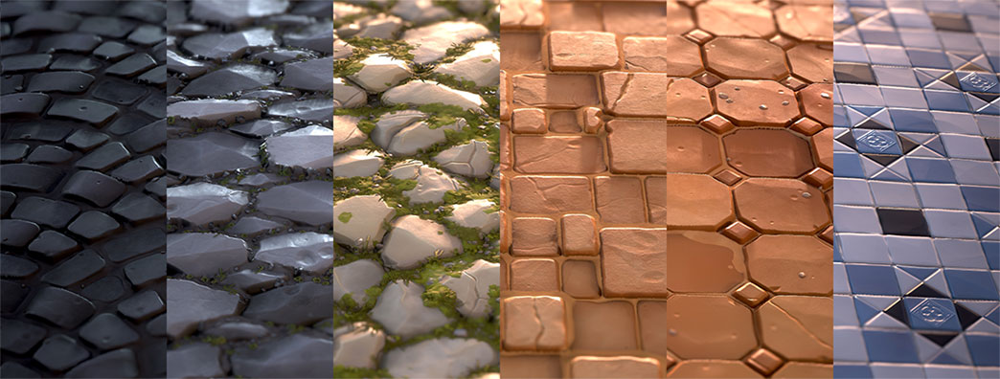
Starting a new Texture:
Stylized Tile Generator is designed to start with a basic luminance map without any predefined edges or cracks between the tiles - this gives full control of the edge thickness as the luminance map will generate its own cracks between shapes of different values. A luminance map with cracks between tiles will still function correctly, however you won't be able to set the width of the cracks to any lower than the basic luminance input map already includes. Do not use a luminance map with any slope information, as this will create unpredictable results. If you want to include extra slope/height information use 'Generate Sloping' or the 'Height Map' input (or both!).
Stylized texture generator is designed to use a 'large to small' workflow, wherein you start with the big shapes, and slowly add detail as needed. It may be tempting to turn on every component of Stylized Texture Generator, but keep in mind that performance will drop with each component that is activated, so it is best to use only the features that your texture calls for. The recommended way to create a finished texture is to work your way down in order through the different tabs, turning on only the features that you need. If performance is low or you want to experiment, you can turn off components temporarily to speed up perfomance, and then turn them back on later without losing any of your settings.
At first you should focus only on the input pattern, the 'Height' tab, and the 'Edges' tab to see how the scale of your input luminance map is working. Once you are satisfyed with the large scale shape of your tiles and its basic edge details, you can continue down the tabs.
It is recommended when starting off to set the parent resolution to 1024. This will dramatically speed up performance while doing your first pass. After you feel your texture is mostly complete, then increase resolution up it to 2048 or 4096 and make any necessary tweaks before rendering the final outputs.
Height Tab:
Offset By Luminance Map - Uses the source luminance mask to offset height of tiles. Useful for when an extra height map isn't necessary.
Luminance Range - Sets the range of the luminance offset.
Generate Sloping - Uses a flood fill node to fill pattern shapes with a gradient. Note that you can use more than one slope to create large-scale faceting effects.
Slope Direction - Sets the direction of slopes to horizontal + vertical, horizontal only, vertical only, or random in all 360 degrees. Random +1/2/3 will add extra gradients to tiles, creating sculptural effects.
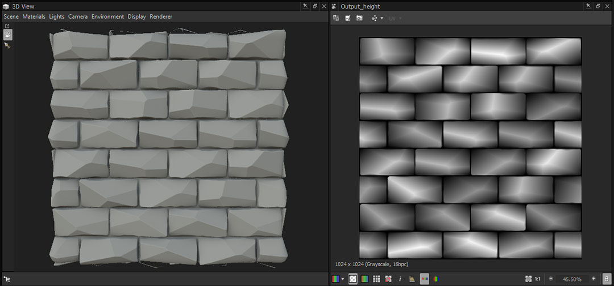
An example of Slope Direction set to "Random +3".
Slopes Blend Type - Sets the blend mode of the generated slopes. Try using different blend modes to see which is working best with your luminance map. Note: if no other 'Height Map' or 'Luminance Offset' are being used, 'Add' and 'Overlay' will have no visible effect - try raising 'Luminance Offset' if this occurs or use 'Multiply' (will only take away height from the overall texture) or 'Add/Sub' (both adds and takes away, giving the most extreme results.)
Slopes Opacity - Sets the opacity of all sloping effects.
Slopes Mask High - Sets the high value of the mask range that Sloping will appear. Note: Make sure this is always higher than the Mask Low value, or else no slopes will appear. Wider ranges between Mask Low and Mask High will produce more slopes.
Slopes Mask Low - Sets the low value of the mask range that Sloping will appear. Note: Make sure this is always lower than the Mask High value, or else no slopes will appear. Wider ranges between Mask Low and Mask High will produce more slopes.
Slopes Mask Contrast - Set the contrast of the Slopes mask. Lower values soften the mask.
Use Custom Curve - Activates a custom curve input to give more control to the shape of sloping.
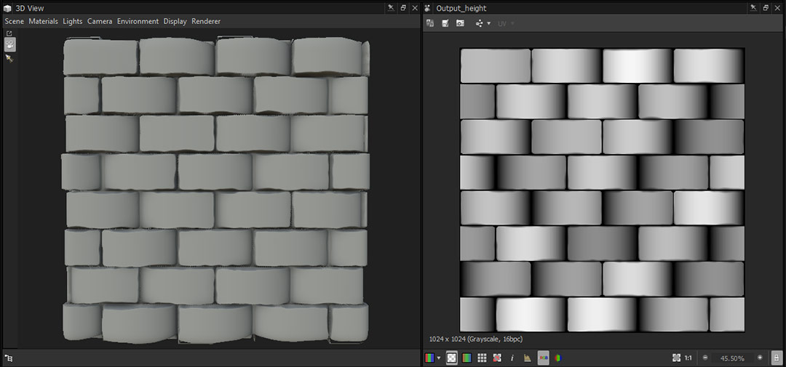
A custom curve input creates a soft bell shape to tiles.
Use Height Map - Opens an input for a separate height map. Height can be used to add slope, macro shapes, patterns, and other details that do not to appear as a separate tile. Height map is calculated after the base tiles and will not affect the main tile shapes.
Height Map Blend Type - Sets the blend mode of the height map. Inputs: Add, Subtract, Multiply, Overlay.
Height Map Opacity - Sets the opacity of the height map.
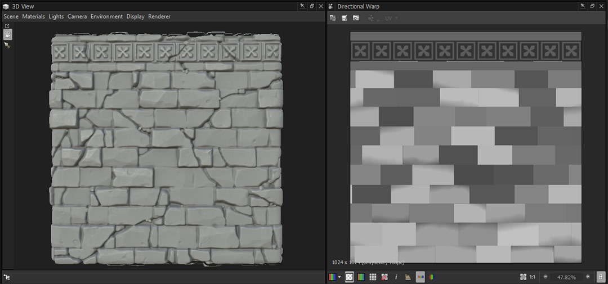
A custom height input used to create ornate designs on a section of trim.
Edges Tab:
Edge Width - Uses a Edge Detect node to generate lines between different values from the luminance map. High values will separate source pattern blocks farther apart. Beware: high values combined with high Edge Roundness values can push smaller shapes to black.
Edge Roundness - Sets the roundness value on the Edge Detect node. Note: high values can push smaller shapes to black.
Edge Bevel Distance - Sets the value of the Bevel node used to generate slopes around edges. Very small negative values are usually used.
Use Edge Noise - Adds an effect that uses a noise texture to create stylized edges.
Edge Noise Intensity - Sets the intensity of the edge noise effect. Edge noise is an additive process, so high intensity tightens edges closer together while creating more sculptural edges. Setting the Bevel Distance to a lower position will allow for higher Edge Noise Intensity while still leaving gaps between tiles.
Edge Noise Distance - Provides additional control for thickness of edge nosie. Lower values tighten edges, higher values push apart edges.
Edge Noise Scale - Sets the scale of the noise map used for Edge Noise. Higher values will create higher frequency edge noise.
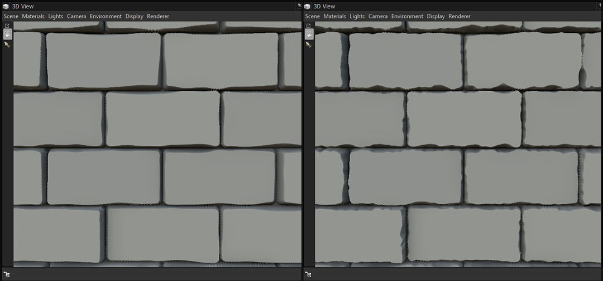
Edge Noise Scale set to a value of 10 (left) and a value of 30 (right)
Use Slope Blur - Adds a slope blur to edges.
Slope Blur Map - Choose between different input maps or create a custom input for Slope Blur.
Slope Blur Intensity - Sets the intensity value of the slope blur node.
Slope Blur Mode - Set the mode of the slope blur node. Inputs: Blur - warps edges, Min - takes chunks out of edges, Max - adds chunks to edges.
Slope Blur Soften - Softens to slope blur map, reducing the frequency of effects.
Use Corner Chip (Advanced) - Adds additional advanced controls for corner chips and creates a corresponding output to visualize the corner chip mask.
NOTE: Values are dependent on scale of pattern shapes, Edge Width, and Edge Roundness. Requires careful tuning of Low Clip, High Clip, and Mask Size to produce proper corner chips. Use the corresponding output mask to tune values until only corners are visible.
Corner Chip Mask Size - Sets the overall size of the mask for edge corners.
Corner Chip Mask Low Clip - Sets the low value that corner warping appears. Warning: If level is too low corner warping may not appear at all. NOTE: Use corresponding output mask to visualize.
Corner Chip Mask High Clip - Sets the high value that corner warping appears. Warning: If level is too high warping will appear in all cracks. NOTE: Use corresponding output mask to visualize.
Corner Chip Opacity - Sets the opacity of corner chips.
Edge Depth - Sets the depth of edges. Warning: artifacts can occur when using values less than '1'. Use 'Soften Cavities' if this occurs.
Soften Cavities - Prevents artifacts in cavities. Note: 'Soften Cavities' is often not necessary when using 'Cavity Material'.
Soften Cavities Intensity - Sets the intensity of the blur node used for Soften Cavities.
Soften Edges - Softens edges.
Soften Edges Intensity - Sets the size of the softening effect on hard edges.
Soften Edges Opacity - Sets the opacity of the softened edges over the hard edges.
Edge Dilate - Tightens final edge result.
Cracks Large Tab:
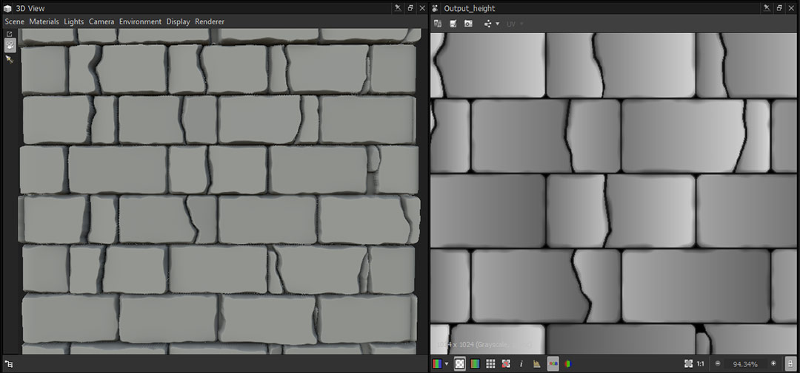
Large cracks fully separate tiles.
Cracks Large - Activates large cracks. Large cracks will fully separate tiles in multiple pieces, so all parameters under the "Edges' tab will apply to the new tiles that are created by large cracks. Note: this differs from the 'Cracks Small' tab, wherein cracks are generated as surface detail only, and do not fully separate tiles into multiple pieces.
Cracks Large Width - Sets the base width of Large Cracks. Note: The final width of cracks is still affected by 'Edge Bevel Distance', 'Edge Noise', 'Slope Blur', and 'Corner Chip' parameters under the "Edges" tab.
Cracks Large Roundness - Sets the roundness of Large Cracks. Note: If using high X and Y amounts, high Roundness values can cause large areas to drop out.
Cracks Large Type - Sets the type of Large Cracks to either 1: Directional (cracks appear only in a specified direction, usful for horizontal bricks or patterns where cracking in all directions may cause weird shapes) or 2: Omni (cracks will appear in web-like patterns in all directions)
Cracks Large Mask Low - Sets the low value of the mask range that Cracks Large appear. Note: Make sure this is always lower than the Mask High value, or else no cracks will appear. Wider ranges between Mask Low and Mask High will produce more cracks.
Cracks Large Mask High - Sets the high value of the mask range that Cracks Large appear. Note: Make sure this is always higher than the Mask Low value, or else no cracks will appear. Wider ranges between Mask Low and Mask High will produce more cracks.
Cracks Large X Amount - Controls how many large cracks are generated on the X Axis.
Cracks Large Y Amount - Controls how many large cracks are generated on the Y Axis.
Cracks Large Rotation - Rotates large cracks in increments of 45 degrees via a Safe-Transform node.
Cracks Large Warp Intensity - Controls the intensity of the warp used to add more shape to large cracks.
Crack Large Warp Scale - Low values produce softer shapes to large cracks, higher values will add more high-frequency angular shapes.
Cracks Large Dilate - Tightens final Crack Large result. Note: High values can cause artifacts.
Surface Tab:
Sculpting - Adds large scale surface details.
Sculpting Type - Choose from multiple surface sculpting types, or create your own!
1: Chunky - Combination of softer large scale shapes with detailed angular smaller chips. Produces a fairly realistic effect.
2: Angular - Highly stylized with crisp edges and sharp angles.
3: Scalloped - Wavy shapes with terracing layers.
4: Custom - Make your own! Note: Custom sculpting maps do not need to be manually offset by tile shapes via the traditional directional warp by luminance map - this is already done under-the-hood for you.
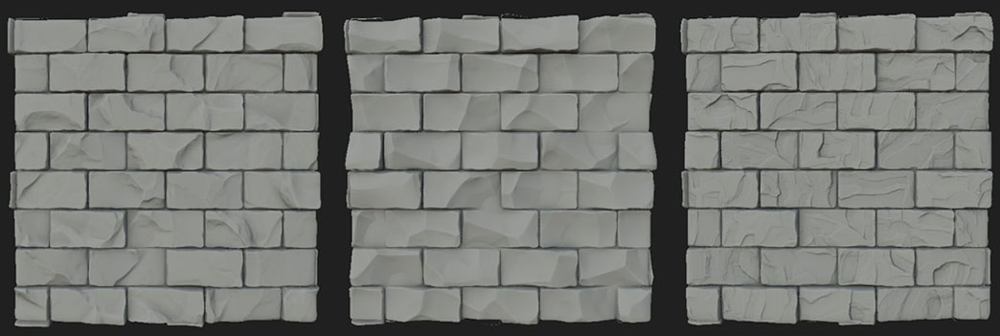
Chunky (left), Angular (middle), Scalloped (right).
Blend Mode - Sets the blend mode for the Sculpting Type. I often find that 'Subtract' works best, but each blend mode can produce fairly different results, so experiment!
Tile Seed - Moves the basic sculpting shapes around to create different iterations. Note: Does not appear when using a 'Custom' sculpting map.
Noise Seed - Changes the 'Disorder' values of the source noise nodes used to generate surface sculpting. Note: Does not appear when using a 'Custom' sculpting map.
Scale - Changes the scale of the surface sculpting. Higher numbers produce higher frequency results. Note: Does not appear when using a 'Custom' sculpting map.
Slope Blur - Adds a slope blur to surface sculpting. Useful for adding extra detail for more realistic results.
Slope Blur Intensity - Controls the intensity of the slope blur.
Slope Blur Scale - Controls the scale of the map used for the slope blur. Higher values produce softer results.
Slope Blur Soften - Softens the shapes created by slope blur.
Edge Chips Tab:
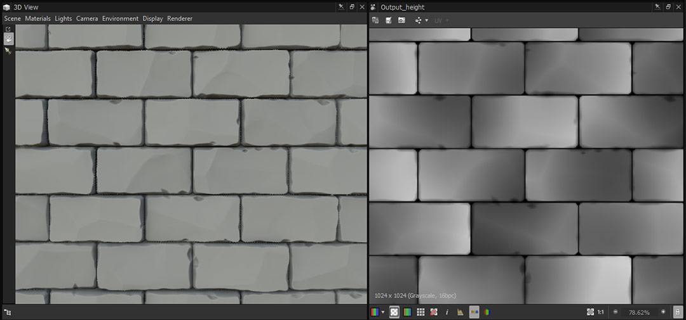
Edge chipping along edges using Edge Chips.
Edge Chips - Generates chips along convex edges.
Threshold - Controls the threshold on how intense an edge convexity needs to be to generate edge chips. Lower values produce more edge chips.
Edge Chip Amount - Controls how many edge chips are generated. Higher values produce more edge chips.
Edge Chip Scale - Sets the size of the individual edge chips.
Edge Chip Scale Random - Randomizes the scale of edge chips. Note: Higher values tend to shrink the size of edge chips - increase 'Edge Chip Scale' to compensate.
Edge Chip Curve - Curves the shape of edge chips. Positive values produce softer chips, negative produce sharper chips.
Edge Chip Soften - Softens the overall edge chip effect.
Edge Chip Opacity - Controls the overall opacity of edge chips.
Large Pitting Tab:
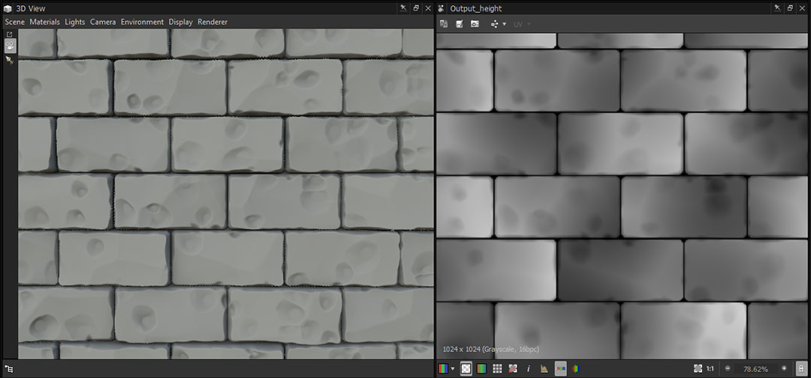
Large Pitting offers detailed control of shape, slope, and terracing.
Large Pitting - Creates large pits on the surface of tiles.
Large Pitting Amount - Controls how many large pits are generated.
Large Pitting Scale - Controls the scale of the individual large pits. Higher values create more large pits.
Large Pitting Scale Random - Randomizes the scale of large pits. Note: Higher values tend to shrink the size of pits - increase 'Large Pitting Scale' to compensate.
Large Pitting Slope Distance - Sets the distance of the slope that is created around large pits.
Large Pitting Color Random - Randomized the opacity of large pits.
Large Pitting Warp - Warps large pits to break up repetition/regularity.
Large Pitting Opacity - Sets the overall opacity of large pitting.
Large Pitting Terracing - Adds a terracing effect to large pits.
Terracing Level Count - Controls how many levels of terracing are generated.
Terracing Soften - Softens the edges created by terracing.
Terracing Opacity - Controls the overall opacity of terracing on large pits.
Small Pitting Tab:
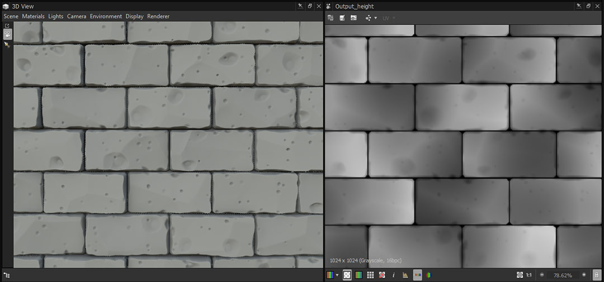
Small Pitting provides simpler small-scale pitting effects.
Small Pitting - Creates simple small pits.
Small Pitting Amount - Controls how many small pits are generated. Higher values create more small pits.
Small Pitting Scale - Controls the scale of the individual small pits. Higher values create more small pits.
Small Pitting Scale Random - Randomizes the scale of small pits. Note: Higher values tend to shrink the size of pits - increase 'Small Pitting Scale' to compensate.
Small Pitting Opacity - Controls the overall opacity of small pits.
Cracks Small Tab:
Cracks Small - Adds small cracks that appear on the surface of tiles.
Cracks Small Mask Low - Sets the low value of the mask range that Cracks Small appear. Note: Make sure this is always lower than the Mask High value, or else no cracks will appear. Wider ranges between Mask Low and Mask High will produce more cracks.
Cracks Small Mask High - Sets the high value of the mask range that Cracks Small appear. Note: Make sure this is always higher than the Mask Low value, or else no cracks will appear. Wider ranges between Mask Low and Mask High will produce more cracks.
Cracks Small X Amount - Controls how many small cracks are generated on the X Axis.
Cracks Small Y Amount - Controls how many small cracks are generated on the Y Axis.
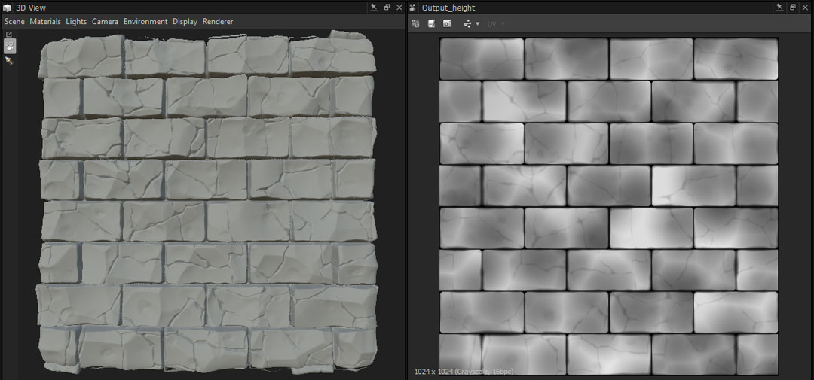
Cracks Small with X Amount set to 12 and Y Amount set to 6.
Cracks Small Width - Sets the width of small cracks.
Cracks Small Roundness - Sets the roundness of small cracks where they intersect.
Cracks Small Warp - Controls the intensity of the warp used on small cracks.
Cracks Small Slope Blur - Controls the intensity of the slope blur used to give detail to small cracks.
Cracks Small Opacity - Controls the overall opacity of small cracks.
Cracks Small Dilate - Pushes small cracks closer together. Note: High values can produce artifacts.
Warp tab:
Warp - Warps the final tile result to break up straight angles and regular shapes.
Warp Noise Input - Choose between two noise map inputs for warping.
-Perlin Blend - a soft noise that creates smooth bending.
-Crystal Blend - an angular map that creates stylized hard bending.
Warp Intensity - Sets the intensity of the warp.
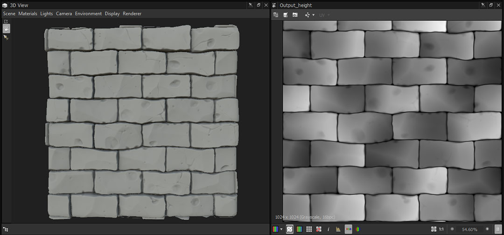
"Crystal Blend" with an Intensity of 30.
Warp Noise Scale - Sets the scale of the noise map. Higher values produce higher frequency results.
Warp Corner Chip Masking - Adds extra control from the "Corner Chip (advacned)" parameter under the Edges tab. When activated and properly tuned, will bend tiles around corners.
Cavity Material Tab:
Cavity Material - Creates a new material completely separate to tiles that gathers in cavities.
Cavity Material Type - Sets the type of height map to use in the cavity regions.
1: Grout - A simple gritty height map usful for grout or mortar style materials.
2: Sand - A wavy height map useful for sand and dirt materials.
3: Dirt - A splotchy height map useful for dirt and other organic materials.
4: Moss - A lumpy height map useful for moss and other organic materials.
5: Custom - Input your own custom height map to use for the Cavity Material.
Tile Cavity Material - Sets the tiling rate of cavity material in multiples of 1 (via Safe Transform).
Direction - Sets the direction type of the cavity material.
Flat - For use of floors where cavity material collects equally in all directions.
Directional - For use on walls where cavity material collects only on top or below protruding tiles.
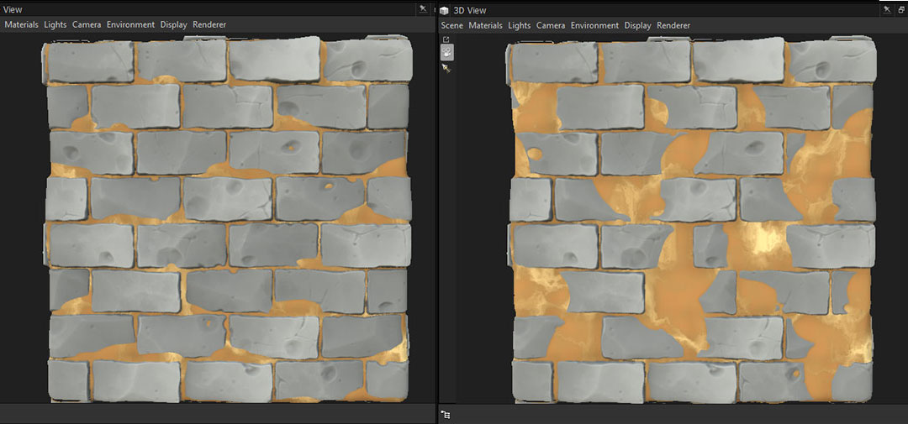
Direction set to "Directional" collect sand on top of protruding bricks (left), set to "Flat" collects sand equally across tiles (right).
Angle - Sets the angle that Cavity Material collects. Only applies when using 'Directional' Direction type.
Mask Depth - Sets the depth at which Cavity Material is generated. Higher numbers moves the cavity material higher up through tiles.
Mask Contrast - Controls the contrast of the overall cavity mask. Higher values produce sharper edges, lower values produce softer edges.
Use Threshold - Creates a threshold effect that expands cavity material outward while breaking up the shape by the height information from the Cavity Material type.
Threshold Distance - Sets the distance the of the cavity material threshold. Higher values extend the Cavity Material further.
Threshold Intensity - Controls how much the cavity material texture influences the threshold mask. Higher values break up the threshold mask more.
Threshold Soften - Softens the shape of the threshold mask.
Threshold Position - Sets the cutoff position of the Cavity Material Threshold. Higher values expand the Cavity Material Threshold mask.
Threshold Contrast - Set the contrast of the Cavity Material Threshold mask. Higher values produce sharper edges, lower values produce softer edges.
Threshold Opacity - Sets the opacity of the thresholded part of Cavity Material only.
Add AO Mask - Uses ambient occlusion to generate additional cavity material. This is ideal for cavities and surface detail that lies above the base Cavity Material Depth.
Occlusion Mask Depth - Sets the depth value on occlusion generated areas not affected by the 'Height' value.
Occlusion Mask Radius - Sets the radius value on occlusion generated areas not affected by the 'Height' value.
Occlusion Mask Opacity - Sets the opacity of occlusion generated areas not affected by the 'Height' value.
Fill Intensity - Controls the intensity of the non-uniform blur used to 'fill' cavity areas. Lower values will leave more of underlying tile surface details intact, while higher values will completely replace the underlying tile detail with only height information from the Cavity Material.
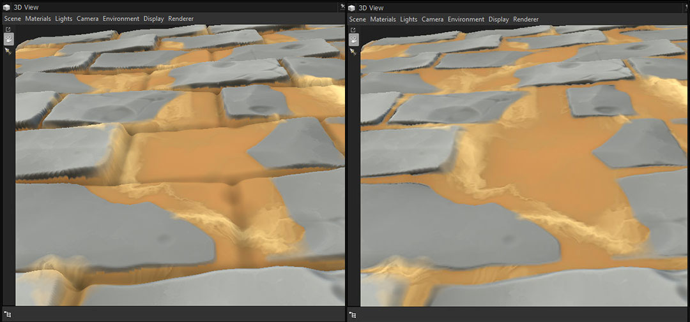
A Fill Inensity of 1 (left) and 3 (right).
Threshold Fill Intensity - Controls how much the threshold mask contributes to the 'Fill Intensity' value set above. Lower values will reduce potentially un-wanted warping effects on surrounding tiles.
Cavity Material Opacity - Controls the overall opacity of cavity material. Usually should be left at 1 unless doing a light layer of sand or something similar.
Texture Height Opacity - Controls how much of the cavity material texture contributes to the overall height output.
Height Offset - Activates height offset controls to the cavity material.
Height Offset Type - Offsets the overall height of the cavity material.
Convex: Puffs cavity material outward, useful for adding more volume to cavity material.
Concave: Sinks cavity material inward, useful for smooth grout and sand.
Height Offset Size - Sets the size of the bevel used to generate cavity material height offset.
Height Offset Opacity - Sets the opacity of the concave/convexity effect from height offset.
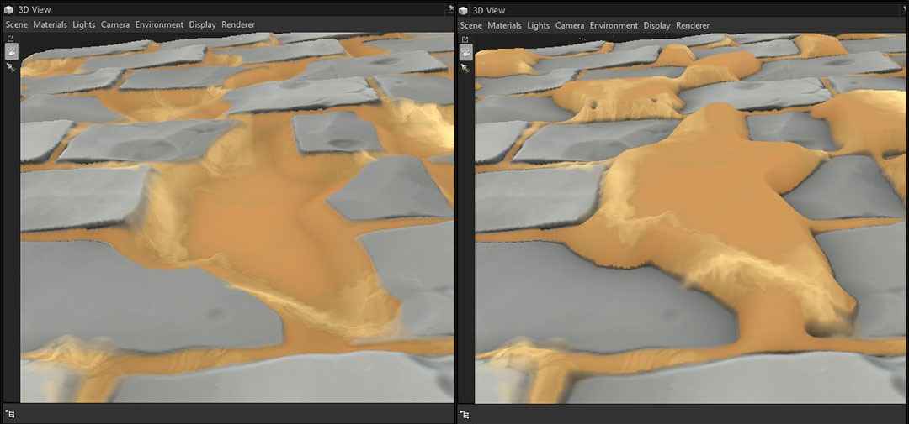
Height Offset set to Concave (left) and Convex (right).
Extra Mask - Add a custom grayscale map to further control the Cavity Material mask.
Extra Mask Blend Type - Sets the blend type of Extra Mask to either 1: Add, or 2: Multiply.
Extra Mask Opacity - Sets the opacity of Extra Mask.
Rocks Tab:
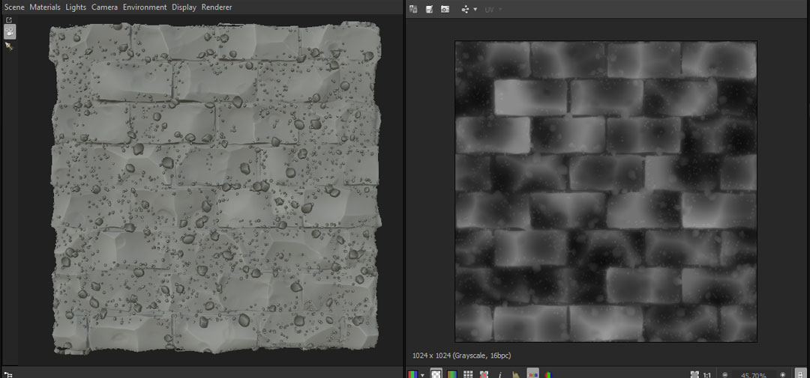
Large and small rocks masked to Cavity Material.
Rocks Large - Create large rocks across tiles.
Rocks Large Amount - Controls how many large rocks are generated. Higher values produce more rocks.
Rocks Large Scale - Controls the overall scale of large rocks.
Rocks Large Scale Random - Randomizes the scale of large rocks. Note: Higher values tend to shrink the size of rocks - increase 'Rocks Large Scale' to compensate.
Rocks Large Cavity Threshold - Controls how much the Tiles/Cavity Map affects generating of Rocks Large. Higher values create more rocks.
Use Custom Large Rocks - Activate 3 custom inputs for Large Rocks.
Rocks Small - Create small rocks across tiles.
Rocks Small Amount - Controls how many small rocks are generated. Higher values produce more rocks.
Rocks Small Scale - Controls the overall scale of small rocks.
Rocks Small Scale Random - Randomizes the scale of small rocks. Note: Higher values tend to shrink the size of rocks - increase 'Rocks Small Scale' to compensate.
Rocks Small Cavity Threshold - Controls how much the Tiles/Cavity Map affects generating of Rocks Sarge. Higher values create more rocks.
Use Custom Small Rocks - Activate 2 custom inputs for Small Rocks.
Mask to Tiles - Controls the amount tiles add to the mask for generating rocks. Higher values will generate ore rocks on tiles.
Mask to Tiles Invert - Inverts the Tiles Mask, generating rocks in areas between tiles.
Mask to Cavity Material - Controls the amount the Cavity Material adds to the mask for generating rocks. Higher values will generate more rocks on the Cavity Material.
Mask to Cavity Material Invert - Inverts the Cavity Material Mask, generating rocks on areas not covered by Cavity Material.
Grass Tab:
Grass - Creates clumps of grass on top of the Cavity Material or in cavities.
Generate Unique Clumps - Blades of grass are created individually based on clump locations, creating unique patterns of grass blades at each clump. If left 'False', grass will use repeats of 4 pre-composed grass clump shapes. Note: When using 'Custom' Grass Shapes along with 'Generate Unique Clumps', only individual blades of grass should be used as inputs, as opposed to pre-composed grass clumps when this feature is left false.
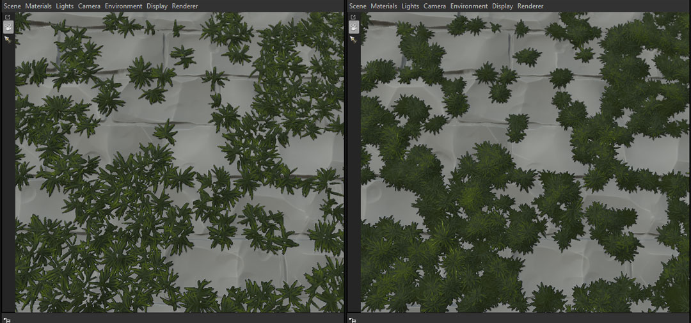
Generate Unique Clumps set to True (left) and set to False (right).
Grass Clump Amount - Controls the total number of grass clumps.
Grass Clump Size - Controls the overall scale of grass clumps.
Grass Blades Amount - Controls how many blades of grass are generated per clump. Note: When using Custom grass shape inputs, this will only function if 'Generate Unique Clumps' is True.
Grass Blades Size - Controls the X and Y scale of the individual grass blades.
Note: When using Custom grass shape inputs, this will only function if 'Generate Unique Clumps' is True.
Note: High values may cause grass shapes to be clipped when not using 'Unique Clumps' - in this case, use these values only for changing the proportions of the grass shapes and adjust 'Clump Size' for overall scaling.
Height - Controls how much the grass contributes to the final height map.
Directional - Grass clumps will generate in a specific direction, rather than splayed out flat. Good for wall materials where grass usually grows upward.
Directional Intensity - Controls how pronounced the directional effect is.
Shape A-D - Choose between Grass, Clover, or Custom grass shapes. Note: when using 'Generate Unique Clumps' combined with a 'Custom' shape, input only a single blades of grass. When using default clumps and a 'Custom' shape, input fully composed grass clumps.
Mask To Tiles - Controls the amount tiles add to the mask for generating grass. Higher values will generate more grass on tiles.
Mask To Tiles Invert - Inverts the Tiles Mask, generating grass in areas between tiles.
Mask To Cavity Material - Controls the amount the Cavity Material adds to the mask for generating grass. Higher values will generate more grass on the Cavity Material.
Mask To Caviy Material Invert - Inverts the Cavity Material Mask, generating rocks on areas not covered by Cavity Material.
Normal Tab:
Tile Intensity - Controls how strong the normal map is for the base tiles.
Tile Shale Overlay - Overlays a 'shale' or flakey type texture to add extra surface detail.
Tile Rough Noise Overlay - Overlays a rough noise texture to add extra surface detail.
Cavity Material Intensity - Controls the normal intenstiy of the cavity material texture.
Grass Blade Intensity - Controls the normal intensity of individual grass blades.
Grass Clump Intensity - Controls the normal intensity of the overall grass clump shapes.
Diffuse Tab:
Diffuse - Activate diffuse colors.
Base Range - Sets the base grayscale range that all color gradients use. Higher values will use a wider range of colors, often creating more overall contrast.
Base Position - Set the base grayscale position that all color gradients use. Lower values will shift colors down the color gradient, High values will shift colors up the gradient.
Luminance Offset - Offsets the color gradient by the original luminance mask input, creating more color variation between tiles.
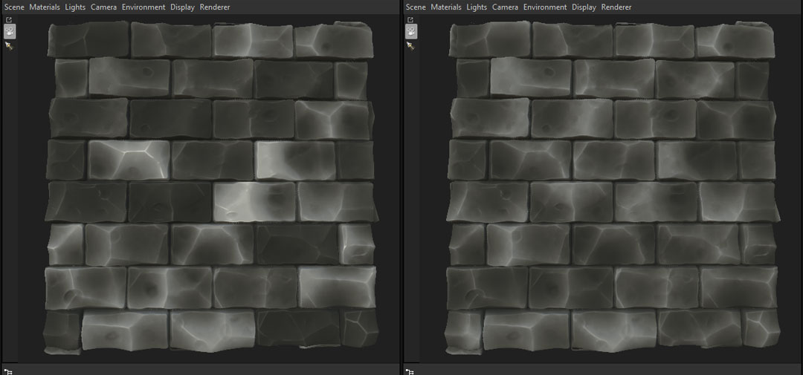
Luminance Offset set to 1 (left) and 0 (right).
Edge Highlight Threshold - Controls the threshold for edge highlights. Higher values will create sharper, smaller edge highlights.
Edge Highlight Contrast - Controls the contrast of edge highlights. Higher values create sharper edge highlights.
Edge Highlight Soften - Blurs the final result of edge highlights.
Edge Highlight Breakup - Breaks up edge highlights to reduce uniformity.
Edge Highlight Opacity - Controls the overal opacity of edge highlights.
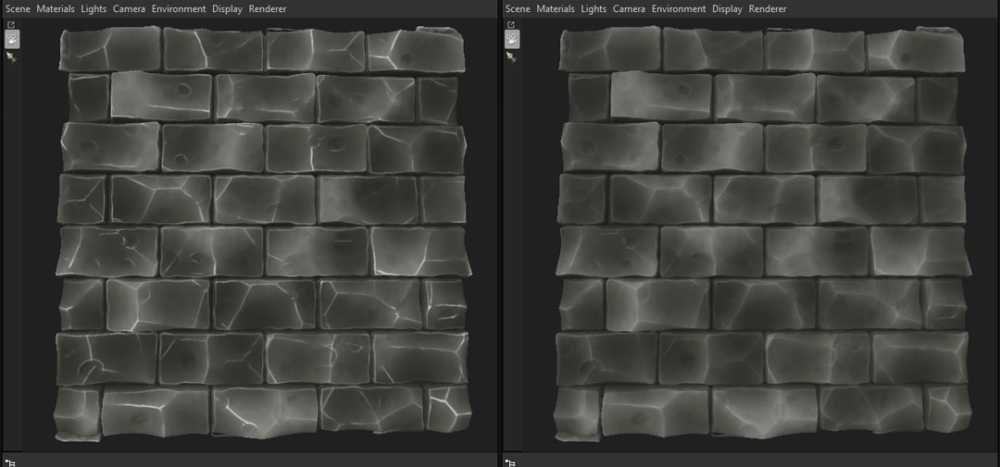
Edge Highlights set to 1 (left) and .25 (right).
Polish Size - Sets the size of the polish effect that creates a soft glow in center of tiles.
Polish Opacity - Controls the opacity of the polish effect.
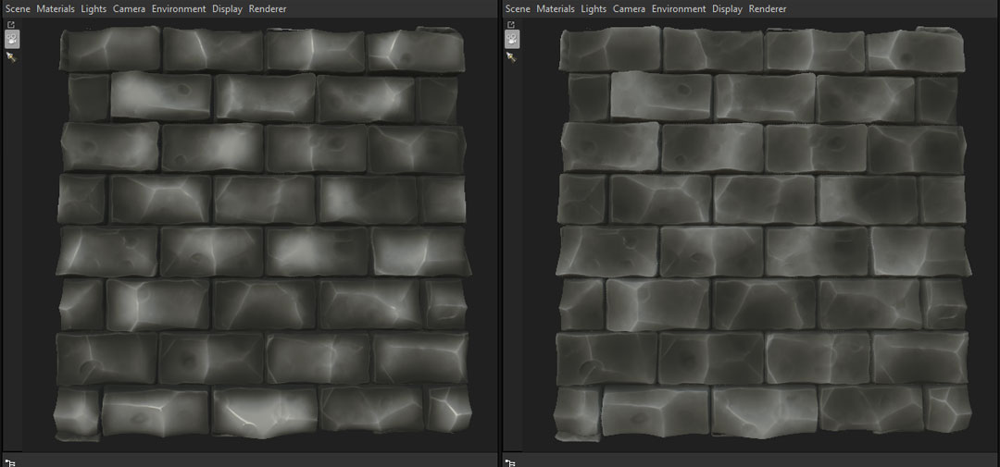
Polish Size set to .35 and Polish Opacity set to 1 (left) and Polish Opacity set to 0 (right).
Brush Stroke Opacity - Controls the opacity of the brush stroke effect.
Occlusion Opacity - Controls how much the ambient occlusion contributes to the base input for the color gradient.
Curvature Opacity - Controls how much curvature contributes to the base input for the color gradient.
Use Custom Diffuse Input - Activate a custom diffuse input to further control the color gradient used on Tiles.
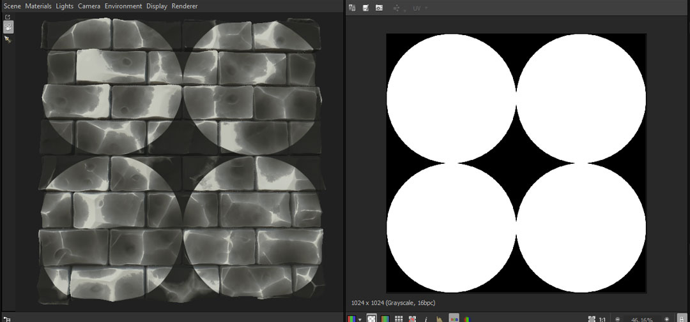
A custom Diffuse Texture raises and lowers diffuse color values.
Custom Input Opacity - Controls the opacity of the custom diffuse input.
Custom Input Blend Type - Set the blend type for Diffuse Custom Input.
Sharpen - Sharpens the final diffuse result.
Diffuse - Tiles Tab:
Primary Color - Choose between 3 pre-made color gradients, or input a custom color gradient.
Primary Color Range - Sets the base input range for the primary color gradient. Higher values will use a wider range of colors, often creating more overall contrast.
Primary Color Position - Sets the base input range for the primary color gradient. Lower values will shift colors down the color gradient, High values will shift colors up the gradient.
Secondary Color - Activate a secondary color. By default, secondary color slightly alters the hue/saturation of the Primary color for select tiles. Use 'Use Custom Secondary Color' if more control is desired.
Use Custom Secondary Color - Input a custom secondary color gradient.
Use Custom Secondary Color Mask - Input a custom mask to control where secondary color appears.
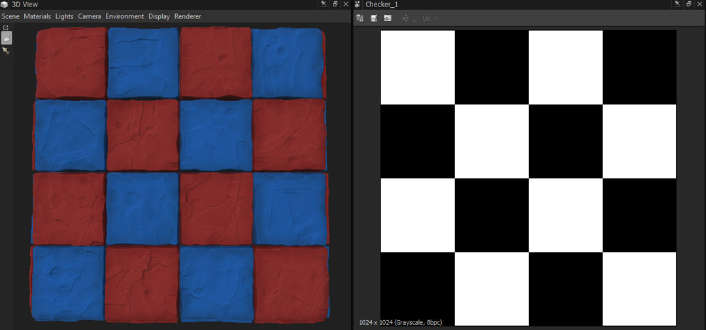
A custom input mask used to separate primary and secondary colors.
Secondary Color Mask High - Set the high value of the cutoff range where secondary color appears. Note: Does not apply to custom color masks.
Secondary Color Mask Low - Set the low value of the cutoff range where secondary color appears. Note: Does not apply to custom color masks.
Secondary Color Range - Sets the base input range for the secondary color gradient. Higher values will use a wider range of colors, often creating more overall contrast.
Secondary Color Position - Sets the base input range for the secondary color gradient. Lower values will shift colors down the color gradient, High values will shift colors up the gradient.
Secondary Color Opacity - Sets the opacity of the secondary color.
Secondary Color Soften - Blends the secondary color mask into surrounding tiles.
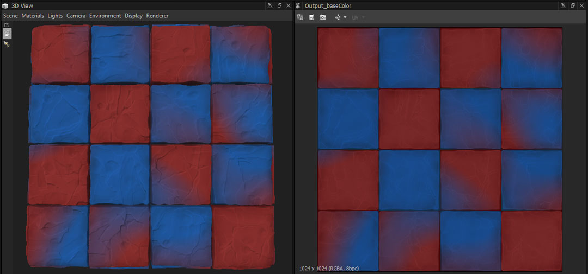
Secondary Color Soften set to 1.
Tertiary Color - Activate a tertiary color. By default, tertiary color slightly alters the hue/saturation of the Primary color for select tiles. Use 'Use Custom Secondary Color' if more control is desired.
Use Custom Tertiary Color - Input a custom tertiary color gradient.
Use Custom Tertiary Color Mask - Input a custom mask to control where tertiary color appears.
Tertiary Color Mask High - Set the high value of the cutoff range where tertiary color appears. Note: Does not apply to custom color masks.
Tertiary Color Mask Low - Set the low value of the cutoff range where tertiary color appears. Note: Does not apply to custom color masks.
Tertiary Color Range - Sets the base input range for the tertiary color gradient. Higher values will use a wider range of colors, often creating more overall contrast.
Tertiary Color Position - Sets the base input range for the tertiary color gradient. Lower values will shift colors down the color gradient, High values will shift colors up the gradient.
Tertiary Color Opacity - Sets the opacity of the tertiary color.
Tertiary Color Soften - Blends the tertiary color mask into surrounding tiles.
Tiles Hue - Controls the hue of the overall tile color.
Tiles Saturation - Controls the saturation of the overall tile color.
Tiles Lightness - Controls the lightness of the overall tile color.
Diffuse - Cavity Material Tab: (only visible if 'Cavity Material' is active)
Cavity Material Diffuse - Choose between different pre-defined color gradients for Cavity Material or input a custom gradient. Note: these are chosen independently form the 'Cavity Material Type' parameter in the separate 'Cavity Material' tab to allow for more control.
Cavity Material Range - Sets the base input range for the cavity material color gradient. Higher values will use a wider range of colors, often creating more overall contrast.
Cavity Material Position - Sets the base input range for the cavity material color gradient. Lower values will shift colors down the color gradient, High values will shift colors up the gradient.
Cavity Material Hue - Controls the hue of the overall cavity material color.
Cavity Material Saturation - Controls the saturation of the overall cavity material color.
Cavity Material Lightness - Controls the lightness of the overall cavity material color.
Diffuse - Rocks Tab: (only visible if 'Rocks' are active)
Rocks Diffuse Color - Choose between different pre-defined color gradients for Rocks or input a custom gradient.
Rocks Diffuse Range - Sets the base input range for the rocks color gradient. Higher values will use a wider range of colors, often creating more overall contrast.
Rocks Diffuse Position - Sets the base input range for the rocks color gradient. Lower values will shift colors down the color gradient, High values will shift colors up the gradient.
Rocks Hue - Controls the hue of the overall rocks color.
Rocks Saturation - Controls the saturation of the overall rocks color.
Rocks Lightness - Controls the lightness of the overall rocks color.
Diffuse - Grass Tab: (only visible if 'Grass' is active)
Grass Diffuse - Choose between different pre-defined color gradients for Grass or input a custom gradient.
Grass Diffuse Range - Sets the base input range for the grass color gradient. Higher values will use a wider range of colors, often creating more overall contrast.
Grass Diffuse Position - Sets the base input range for the grass color gradient. Lower values will shift colors down the color gradient, High values will shift colors up the gradient.
Brush Stroke Opacity - Overlays a brush stroke texture to break up regularity of grass diffuse.
Grass Hue - Controls the hue of the overall grass color.
Grass Saturation - Controls the saturation of the overall grass color.
Grass Lightness - Controls the lightness of the overall grass color.
Roughness Tab:
Roughness - Activates roughness.
Invert - Inverts roughness.
Tiles Luminance Offset - Controls how much the base luminance map offsets roughness. High values will create more roughness contrast across separate tiles.
Tiles Noise Main Type - Choose between 2 pre-made maps, or input a custom map that contributes to the roughness.
Tiles Noise Main Opacity - Sets the opacity of the Noise Main map.
Tiles Noise Gritty Opacity - Controls how much a high-frequency noise map contributes to roughness.
Tiles Range - Controls the overall range of the tiles roughness. Higher values produce more contrast between glossy and matte areas.
Tiles Position - Controls the overall shininess of the tiles. Higher values produce more glossy results.
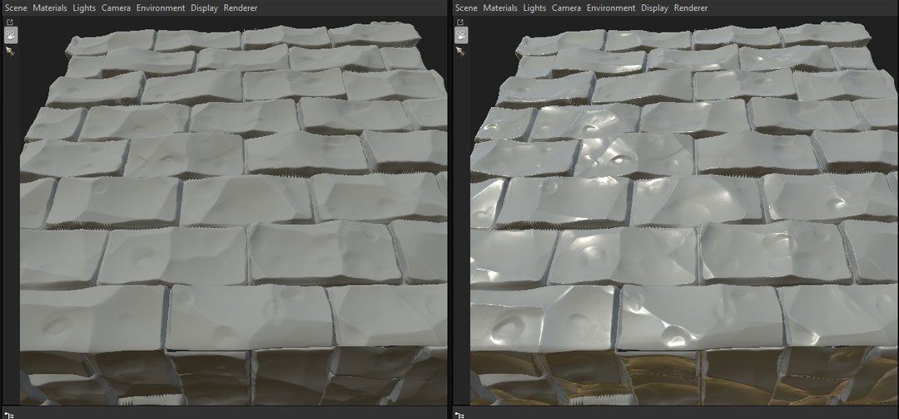
Tiles Position set to .1 (left) and .9 (right).
Cavity Material Range - Controls the overall range of the tiles roughness. Higher values produce more contrast between glossy and matte areas.
Cavity Material Position - Controls the overall shininess of the grass. Higher values produce more glossy results.
Cavity Material Sparkle - Creates a sparkle effect on Cavity Material. Useful for sand, grout, snow, etc.
AO Tab:
AO - Activate ambient occlusion.
Height Depth - Set the depth value of the ambient occlusion node.
Radius - Set the radius value of the ambient occlusion node.
Quality - Set the quality of the ambient occlusion node.
Output Masks Tab:
Output masks - Activate output masks for further control of individual features. Maps include: Tiles, Cavity Material, Rocks, Grass, and Luminance.